linux权限管理
学习目标
1、为什么要设置权限
2、linux中和权限有关的操作
3、文件、文件夹的读、写、执行权限
4、文件、文件夹的属主、属组
5、特殊权限扩展（suid、sgid、sbit）
6、ACL的重要性
7、umask
8、特殊属性（chattr、lsattr）
一、权限
1、什么是权限
我都知道linux是多用户、多任务的，当于超、张三、李四，一起使用linux服务器时，他们对机器上的文件操作，权限都是怎么样的，所有文件都是可以读取、写入、修改、执行的吗？
要不要做权限限制，保护系统安全，保护数据安全？
在linux中，一切皆文件，我们要对文件进行读取、写入、执行（脚本程序文件）。
2、为什么要权限
1、保护服务器数据、文件、进程等
2、不要莫名其妙的背黑锅，权限限制（你作为运维，要限制其他用户的权限，不要伤害你的机器，否则你就背黑锅）
3、针对不同部门，不同员工的工作职责，分工不同，权限应该做好限制。
4、对来自外部的恶意攻击进行防御。
3、权限分类
| 权限针对文件，file | 权限针对目录，directory | |
|---|---|---|
| 读r，read | 表示可以查看文件内容；cat | 表示可以(ls)查看目录中存在的文件名称 |
| 写w，write | 表示可以更改文件的内容；vim 修改，保存退出 | 表示是否可以删除目录中的子文件或者新建子目录(rm/touch/mkdir) |
| 执行x，executable | 表示是否可以执行文件，一般指二进制文件、或者脚本文件 | 表示是否可以进入目录中(cd) |
4、Linux的文件属于谁？
图解linux文件权限，觉得超哥牛吗？
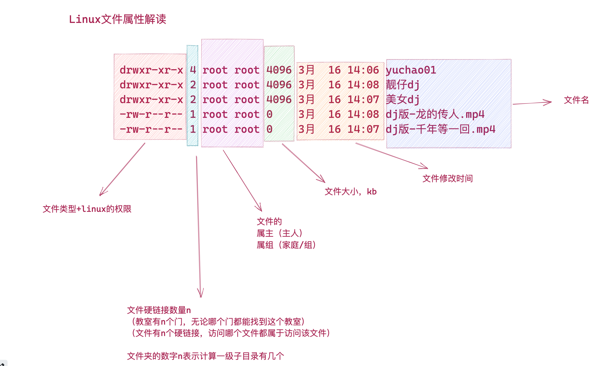
linux中的每一个文件，都有自己的主人，并且有权限限制，限制主人的读、写、执行权限。
限制其他人的读、写、执行权限。
限制组内的r、w、x权限。
可见关于linux的文件，有三个角色
- user 、属主
- group、属组
- other、其他人
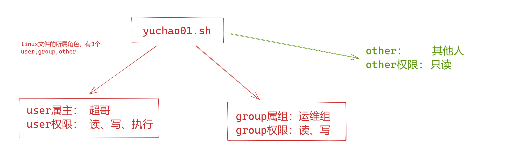
user属主
表示文件的创建者、拥有者，也可理解为，某个用户、对这个文件拥有的权限。
一个文件只能有一个主人，一部手机只能有一个主人。
你可以对你的手机做任何的事，其他的人你可以禁止他碰你手机！
你可以对你的linux文件进行读、写、执行，也可以禁止别人对你的文件做任何操作！
group属组
文件所属的用户组，拥有组，可以理解为，某一个组的用户，对这个文件的权限。
文件
user，属主是于超 ，权限是允许读、写、执行
group，属组是运维组，权限是读，写，不可执行
other其他用户
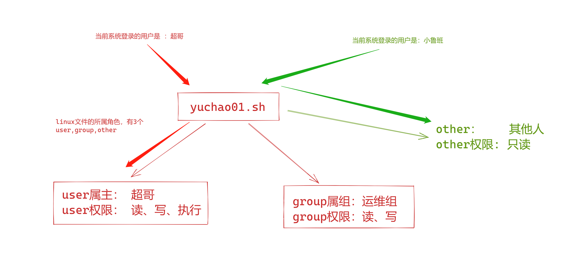
- 当前登录系统用户是yuchao，你想操作yuchao01.sh文件，权限自然是读、写、执行
- 当前登录系统用户是，小鲁班，对于yuchao01.sh这个文件，权限怎么判定呢？
- 看是不是在yuchao01.sh的属组里，存在，享受group内权限
- 不存在，执行other角色权限
5、所属者的表示方法
我们再懂得了，文件的所属关系，所属角色有user、group、other之后，下一步应该如何使用linux命令，去查看、设置、文件的所属角色呢。
u属主
用u表示文件的属主，u是个缩写，全称是the user who owns it(拥有它的用户)是谁
默认是文件的创建者，就是文件的属主
g 属组
g来表示文件属组，默认是创建该文件的用户（的主组）
比如是yuchao01用户创建了文件，linux.log
touch linux.log
该文件的默认
属主、属组就是
yuchao01 yuchao01
g全拼是，other users in file's group（文件组中的其他用户）可以享有的权限。
o 其他人
用o表示，既不是文件的创建者，也不是文件属组里的用户，那么就是其他人的角色。
all 角色
在后续使用linux命令，修改文件权限时，除了会用到 u、g、o三个角色，还会使用all（缩写a），表示一次性对三个角色，设置权限。
root 用户
linux中的root用户是特殊用户，是系统的超级管理员，有最大权限，可以任意修改linux文件，因此权利越大、责任越大。
工作里尽量都不用root，以防出故障。
二、权限管理
1、查看文件属性
要设置权限，就需要知道文件的一些基本属性和权限的分配规则。
在Linux 中，ls 命令常用来查看文档的属性，用于显示文件的文件名和相关属性。
ls命令我们之前学过，用于查看文件信息，这里我们使用之前提到过的一个用法，ll
# ll命令
# 查看文件夹下所有的文件（文件夹）详细信息
[yuchao01@yuchao-linux01 ~]$ ll
total 6240
dr--r--r-- 2 yuchao01 yuchao01 6 Jan 13 18:25 chaoge-linux
-rw-rw-r-- 1 yuchao01 yuchao01 6388895 Jan 13 18:38 yuyu666.txt
2、文件属性详解
关于文件属性，如图所示
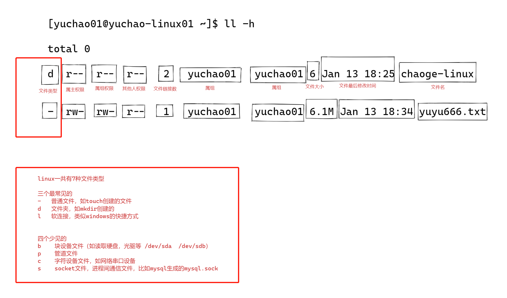
2.1 文件权限（字母，数字表示）
| 权限 | 对应数字 | 意义 |
|---|---|---|
| r | 4 | 可读 |
| w | 2 | 可写 |
| x | 1 | 可执行 |
2.2 如何解读文件属性
[yuchao01@yuchao-linux01 ~]$ ll
total 6240
dr--r--r-- 2 yuchao01 yuchao01 6 Jan 13 18:25 chaoge-linux
-rw-rw-r-- 1 yuchao01 yuchao01 6388895 Jan 13 18:38 yuyu666.txt
如 yuchao666.txt文件的属性
第1位，- 表示是普通文件类型
第2-4位， rw- 表示user权限，是读、写、没有执行权限
第5~7， rw- 表示group权限，是读、写、没有执行权限
第8~10， r-- 表示other权限，其他人只读
3、设置文件权限
设置、或修改文件权限，需要使用命令
语法（change mode）
chmod 选项 权限 文件
作用：设置、修改文件的权限（包括设置user，group，other对应的权限）
选项： -R 递归设置文件夹权限
注意：使用该命令，要么是root登录，要么是属主（你不可能随便修改别人的资料）
字母权限实践
用法1：使用root登录系统，获取最大权限，可以修改他人文件属性
1.给文件添加执行权限
一般可执行的命令，脚本文件，都需要添加执行权限。
给文件添加执行权限
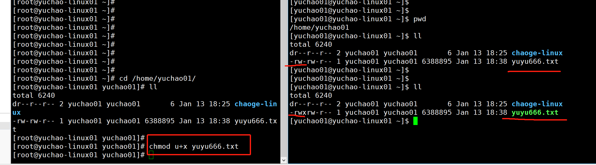
扣除文件执行权限
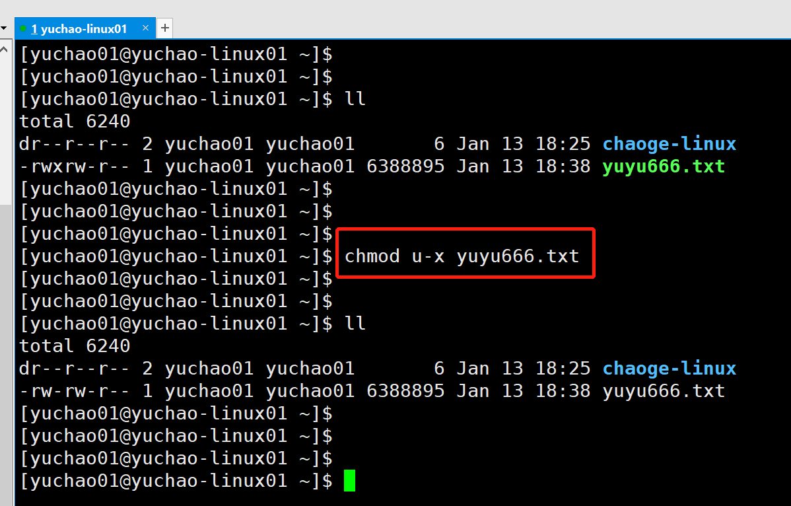
为什么我们能使用ls，echo命令，因为他们都有x执行权限。
[yuchao01@yuchao-linux01 ~]$ ll /bin/ls
-rwxr-xr-x. 1 root root 117672 Apr 11 2018 /bin/ls
[yuchao01@yuchao-linux01 ~]$
[yuchao01@yuchao-linux01 ~]$ ll /bin/echo
-rwxr-xr-x. 1 root root 33072 Apr 11 2018 /bin/echo
一次性添加、减少多个文件的权限。
一次性减少2个文件的user，读权限。
[yuchao01@yuchao-linux01 ~]$ ll
total 6240
dr--r--r-- 2 yuchao01 yuchao01 6 Jan 13 18:25 chaoge-linux
-rw-rw-r-- 1 yuchao01 yuchao01 6388895 Jan 13 18:38 yuyu666.txt
[yuchao01@yuchao-linux01 ~]$
[yuchao01@yuchao-linux01 ~]$
[yuchao01@yuchao-linux01 ~]$ chmod u-r chaoge-linux yuyu666.txt
[yuchao01@yuchao-linux01 ~]$ ll
total 6240
d---r--r-- 2 yuchao01 yuchao01 6 Jan 13 18:25 chaoge-linux
--w-rw-r-- 1 yuchao01 yuchao01 6388895 Jan 13 18:38 yuyu666.txt
修改yuchao666.txt权限为
user，可读、可写、可执行
group、只读
other、只读
[yuchao01@yuchao-linux01 ~]$ chmod u=rwx,g=r,o=r yuyu666.txt
[yuchao01@yuchao-linux01 ~]$ ll yuyu666.txt
-rwxr--r-- 1 yuchao01 yuchao01 6388895 Jan 13 18:38 yuyu666.txt
一次性设置yuchao666.txt所有角色，仅可以读写。
[yuchao01@yuchao-linux01 ~]$ chmod a=rw yuyu666.txt
[yuchao01@yuchao-linux01 ~]$ ll
total 6240
dr--r--r-- 2 yuchao01 yuchao01 6 Jan 13 18:25 chaoge-linux
-rw-rw-rw- 1 yuchao01 yuchao01 6388895 Jan 13 18:38 yuyu666.txt
一次性设置当前目录下所有文件，全部最大权限。
-R 文件夹递归操作
[yuchao01@yuchao-linux01 ~]$ chmod -R a=rwx /home/yuchao01/*
[yuchao01@yuchao-linux01 ~]$
[yuchao01@yuchao-linux01 ~]$ ll /home/yuchao01/
total 6240
drwxrwxrwx 2 yuchao01 yuchao01 6 Jan 13 18:25 chaoge-linux
-rwxrwxrwx 1 yuchao01 yuchao01 6388895 Jan 13 18:38 yuyu666.txt
总结
语法
chmod 权限设置 文件
1.给哪些用户角色设置，语法如何表示
chmod u file
chmod g file
chmod o file
chmod ugo file
chmod a file
2.添加，还是减少，还是赋值
chmod + 添加
chmod - 减少
chmod = 赋值
3. 具体哪些权限
r 读
w 写
x 执行
4. 具体语法
chmod ugo=rwx file.log # 给与所有角色，所有权限，最大权限，危险命令
chmod ug=r file.log # 修改user，group，只读，other不修改
chmod go-w file.log # 只给group，other，减去掉写入权限
chmod uo+r file.log # 只给user，other，添加一个读取权限，group不动
| 字母 | 选项 | 作用 |
|---|---|---|
| u（谁） | user | 属主 |
| g（谁） | group | 属组 |
| o（谁） | other | 其他用户 |
| a（谁） | all | 所有人（包含ugo） |
| +（作用） | 加 | 增加作用 |
| -（作用） | 减 | 移除作用 |
| =（作用） | 等于 | 赋值作用 |
| r（权限） | read | 可读权限 |
| w（权限） | write | 可写权限 |
| x（权限） | execute | 可执行权限 |
| -（权限） | - | 没有任何权限 |
注，如果要设置多个角色，多个权限，需要逗号隔开
# 一般用于直接赋值权限，也别去计算，加还是减去权限了，简单粗暴
[yuchao01@yuchao-linux01 ~]$ chmod g=r,o=w,u=rwx yuyu666.txt
[yuchao01@yuchao-linux01 ~]$ ll yuyu666.txt
-rwxr---w- 1 yuchao01 yuchao01 6388895 Jan 13 18:38 yuyu666.txt
思考题
限制yuyu666.txt文件，权限改为属主最大权限，属组可读写，其他人只读，有几种写法。
1.考虑当前文件属性，进行修改
2.直接属性赋值
# 解题
# 当前文件属性
[yuchao01@yuchao-linux01 ~]$ ll yuyu666.txt
-rw-r--r-- 1 yuchao01 yuchao01 6388895 Jan 13 18:38 yuyu666.txt
# 方法1，逐个添加
chmod u+x,g+w yuyu666.txt
# 方法2，直接赋值
chmod u=rwx,g=rw,o=r yuyu666.txt
数字权限
权限简介
- Linux系统上对文件的权限有着严格的控制，用于如果相对某个文件执行某种操作，必须具有对应的权限方可执行成功。
- Linux下文件的权限类型一般包括读，写，执行。对应字母为 r、w、x。
- Linux下权限的粒度有 拥有者 、群组 、其它组 三种。每个文件都可以针对三个粒度，设置不同的rwx(读写执行)权限。通常情况下，一个文件只能归属于一个用户和组， 如果其它的用户想有这个文件的权限，则可以将该用户加入具备权限的群组，一个用户可以同时归属于多个组。
- Linux上通常使用chmod命令对文件的权限进行设置和更改。
刚才讲的是字母权限，还可以使用数字权限进行快速授权
| 权限 | 对应数字 | 意义 |
|---|---|---|
| r | 4 | 可读 |
| w | 2 | 可写 |
| x | 1 | 可执行 |
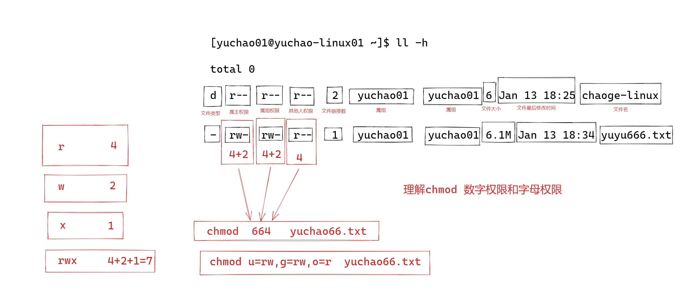
关于数字权限和读、写、执行的参照，以及权限的组合表
| 数字 | 权限 | 作用 |
|---|---|---|
| 0 | - | 不能读，不能写，不能执行 |
| 1 | execute | 不能读，不能写，可执行 |
| 2 | write | 不能读，可写，不能执行 |
| 3 | 2+1 | 不能读，可写，可执行 |
| 4 | read | 可读，不能写，不能执行 |
| 5 | 4+1 | 可读，不能写，可执行 |
| 6 | 4+2 | 可读，可写，不能执行 |
| 7 | 4+2+1 | 可读，可写，可执行 |
结合chmod用法
常见权限对应关系
444 r--r--r--
600 rw-------
644 rw-r--r--
666 rw-rw-rw-
700 rwx------
744 rwxr--r--
755 rwxr-xr-x
777 rwxrwxrwx
- 给与yuchao66.txt，属主读、写、执行权限，属组读写权限，其他人读权限。
[yuchao01@yuchao-linux01 ~]$ chmod 764 yuyu666.txt
[yuchao01@yuchao-linux01 ~]$ ll
total 6240
drwxrwxrwx 3 yuchao01 yuchao01 38 Jan 14 11:32 chaoge-linux
-rwxrw-r-- 1 yuchao01 yuchao01 6388895 Jan 13 18:38 yuyu666.txt
2.给与yuchao666.txt所有角色只读
# 方法1
[yuchao01@yuchao-linux01 ~]$ chmod u=r,g=r,o=r yuyu666.txt
# 方法2
[yuchao01@yuchao-linux01 ~]$ chmod 444 yuyu666.txt
提示
1.记住常见权限即可，一般降低权限，给与只读即可，不要给些奇葩的权限，比如：
只允许写入权限
# 只允许写入
[yuchao01@yuchao-linux01 ~]$ chmod 333 yuyu666.txt
[yuchao01@yuchao-linux01 ~]$ ll yuyu666.txt
--wx-wx-wx 1 yuchao01 yuchao01 4 Jan 14 14:18 yuyu666.txt
# 只允许写入，vim就无法使用了，因为vim要先获取文件内容，得有read权限
# 你可以只重定向数据进入
一般不随便给与777权限
建议，一般是644,754。
练习题
1.给/data目录设置，属主全部权限，属组可读可执行，其他用户无权限，请用2种方式写。
# 方法1
[root@yuchao-linux01 /]# chmod -R u=rwx,g=rx,o='' /data
[root@yuchao-linux01 /]#
[root@yuchao-linux01 /]#
[root@yuchao-linux01 /]#
[root@yuchao-linux01 /]# ll -d /data
drwxr-x--- 2 root root 6 Jan 14 14:36 /data
# 数字权限
[root@yuchao-linux01 /]# chmod -R 750 /data
[root@yuchao-linux01 /]#
[root@yuchao-linux01 /]# ll -d /data
drwxr-x--- 2 root root 6 Jan 14 14:36 /data
2.设置/data/user_info.txt权限，属主读、写，属组读、写，其他人只读。
# 查看touch默认权限
# 提示，root、普通用户、创建文件默认权限是不一样的
[root@yuchao-linux01 /]# touch /data/userinfo.txt
[root@yuchao-linux01 /]# ll /data
total 0
-rw-r--r-- 1 root root 0 Jan 14 14:41 userinfo.txt
# 字母权限
chmod g+w userinfo.txt
# 数字权限
chmod 664 userinfo.txt
3.设置/data/password.txt文件，只有属主读写，其他人无权限。
chmod 600 /data/password.txt
4、文件、目录的的rwx
1.想要删除文件，要看是否有该文件所在目录，目录是否有w权限，才可以删除文件，且还得有x权限，才能进入文件夹。（用普通用户测试）
| 权限针对文件 | 权限针对目录 | |
|---|---|---|
| 读r | 表示可以查看文件内容 | 表示可以(ls)查看目录中存在的文件名称 |
| 写w | 表示可以更改文件的内容 | 表示是否可以删除目录中的子文件或者新建子目录(rm/touch/mkdir) |
| 执行x | 表示是否可以开启文件当中记录的程序,一般指二进制文件(.sh) | 表示是否可以进入目录中(cd) |
测试文件
# 写一个简单的shell脚本
[yuchao01@yuchao-linux01 ~]$ cat hello.sh
echo 你学会linux权限管理了吗
echo 学会80%了
[yuchao01@yuchao-linux01 ~]$
[yuchao01@yuchao-linux01 ~]$
[yuchao01@yuchao-linux01 ~]$ ll hello.sh
-rw-rw-r-- 1 yuchao01 yuchao01 57 Jan 14 14:54 hello.sh
# 去掉文件权限，逐个添加
[yuchao01@yuchao-linux01 ~]$ chmod 0 hello.sh
# 读
[yuchao01@yuchao-linux01 ~]$ cat hello.sh
cat: hello.sh: Permission denied
[yuchao01@yuchao-linux01 ~]$
# 写
[yuchao01@yuchao-linux01 ~]$ echo "echo 还可以" >> hello.sh
-bash: hello.sh: Permission denied
# 执行
[yuchao01@yuchao-linux01 ~]$ ./hello.sh
-bash: ./hello.sh: Permission denied
#################
# 加上r权限
[yuchao01@yuchao-linux01 ~]$ chmod u+r hello.sh
[yuchao01@yuchao-linux01 ~]$ cat hello.sh
echo 你学会linux权限管理了吗
echo 学会80%了
# 加上w
[yuchao01@yuchao-linux01 ~]$ chmod 0 hello.sh
[yuchao01@yuchao-linux01 ~]$ echo "echo 这下学会90%了" >> hello.sh
-bash: hello.sh: Permission denied
[yuchao01@yuchao-linux01 ~]$
[yuchao01@yuchao-linux01 ~]$ chmod u+w hello.sh
[yuchao01@yuchao-linux01 ~]$ echo "echo 这下学会90%了" >> hello.sh
[yuchao01@yuchao-linux01 ~]$ cat hello.sh
cat: hello.sh: Permission denied
[yuchao01@yuchao-linux01 ~]$
[yuchao01@yuchao-linux01 ~]$ chmod u=rw hello.sh
[yuchao01@yuchao-linux01 ~]$ cat hello.sh
echo 你学会linux权限管理了吗
echo 学会80%了
echo 这下学会90%了
# 加上x
[yuchao01@yuchao-linux01 ~]$ chmod u+x hello.sh
[yuchao01@yuchao-linux01 ~]$ ./hello.sh
你学会linux权限管理了吗
学会80%了
这下学会90%了
[yuchao01@yuchao-linux01 ~]$ chmod u-x hello.sh
[yuchao01@yuchao-linux01 ~]$ ./hello.sh
-bash: ./hello.sh: Permission denied
测试文件夹
# 准备一个0权限文件夹
[yuchao01@yuchao-linux01 ~]$ chmod 0 hehe
[yuchao01@yuchao-linux01 ~]$
[yuchao01@yuchao-linux01 ~]$ ll -d hehe
d--------- 2 yuchao01 yuchao01 6 Jan 14 14:49 hehe
# 测试rwx
# 默认无权限
[yuchao01@yuchao-linux01 ~]$ cd hehe
-bash: cd: hehe: Permission denied
[yuchao01@yuchao-linux01 ~]$
[yuchao01@yuchao-linux01 ~]$ ls hehe
ls: cannot open directory hehe: Permission denied
[yuchao01@yuchao-linux01 ~]$
[yuchao01@yuchao-linux01 ~]$ touch hehe/yu.txt
touch: cannot touch ‘hehe/yu.txt’: Permission denied
# 添加r，只能ls
[yuchao01@yuchao-linux01 ~]$ chmod u+r hehe
[yuchao01@yuchao-linux01 ~]$
[yuchao01@yuchao-linux01 ~]$ ls hehe
[yuchao01@yuchao-linux01 ~]$
# 添加w，且必须结合x权限，才能进入，且创建文件夹中内容
[yuchao01@yuchao-linux01 ~]$ chmod u=rwx hehe
[yuchao01@yuchao-linux01 ~]$
[yuchao01@yuchao-linux01 ~]$
[yuchao01@yuchao-linux01 ~]$ touch hehe/yu.txt
[yuchao01@yuchao-linux01 ~]$ cd hehe
[yuchao01@yuchao-linux01 hehe]$ ls
yu.txt
三、属主、属组、实践
1、属主、属组是什么
属主，user、文件属于某个用户
属组，group，文件可以属于一个组，且该组有对于的读、写、执行权限。在这个组中的用户，享受组内权限。
查看user，group
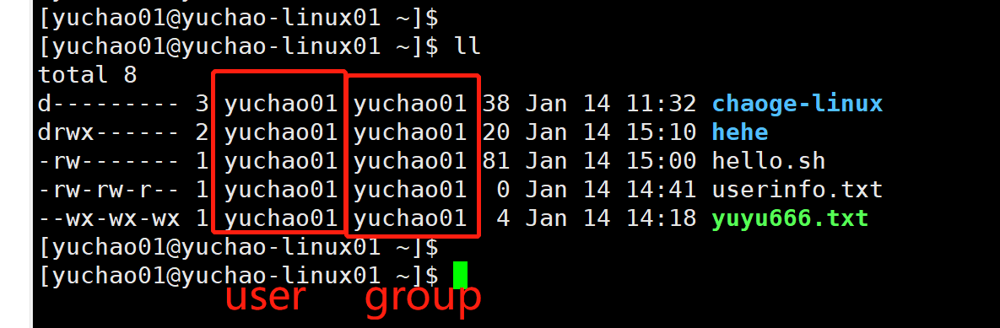
2、chown命令
change owner
语法
chown -R 新属主名 文件路径
作用
修改文件的属主
注意
谁能在公司里，随便篡改资产属于谁？个人肯定不行，老板能行。
linux能修改文件权限的，只有root
场景：
/data/user_info.txt 存放部门用户信息，以前属于yuchao维护，可以读写执行，后来yuchao调部门了，换了个新运维sanpang来维护，主人就改变了。
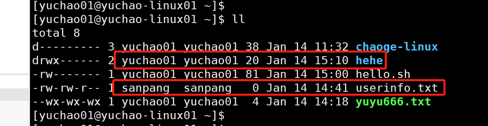
实践
1.修改文件属主
[yuchao01@yuchao-linux01 ~]$ ll
total 8
d--------- 3 yuchao01 yuchao01 38 Jan 14 11:32 chaoge-linux
drwx------ 2 yuchao01 yuchao01 20 Jan 14 15:10 hehe
-rw------- 1 yuchao01 yuchao01 81 Jan 14 15:00 hello.sh
-rw-rw-r-- 1 sanpang sanpang 0 Jan 14 14:41 userinfo.txt
--wx-wx-wx 1 yuchao01 yuchao01 4 Jan 14 14:18 yuyu666.txt
把hello.sh 属主，改为sanpang
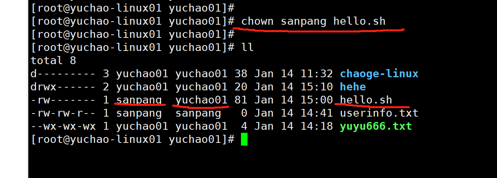
此时怎么解读hello.sh的权限？
-rw------- 1 sanpang yuchao01 81 Jan 14 15:00 hello.sh
1. hello.sh属于sanpang用户，权限是rw-
2. hello.sh属于yuchao01组，该组内用户无权限
3. 其他人无权操作hello.sh
可以尝试用不同的用户，登录机器，查看操作文件的状态
3、chgrp命令
change group更改文件的属组
语法
chgrp 参数 组名 文件
案例
修改hello.sh的属组，查看修改后的权限效果。
[root@yuchao-linux01 yuchao01]# chgrp sanpang hello.sh
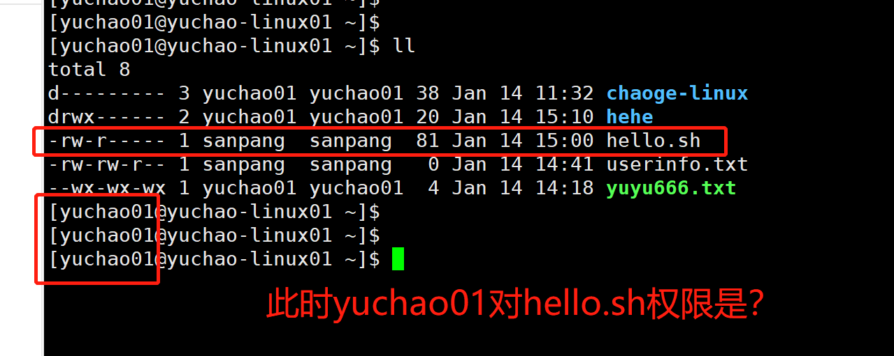
4、chown同时修改属主，属组
语法
[root@yuchao-linux01 yuchao01]# chown yuchao01:yuchao01 hello.sh
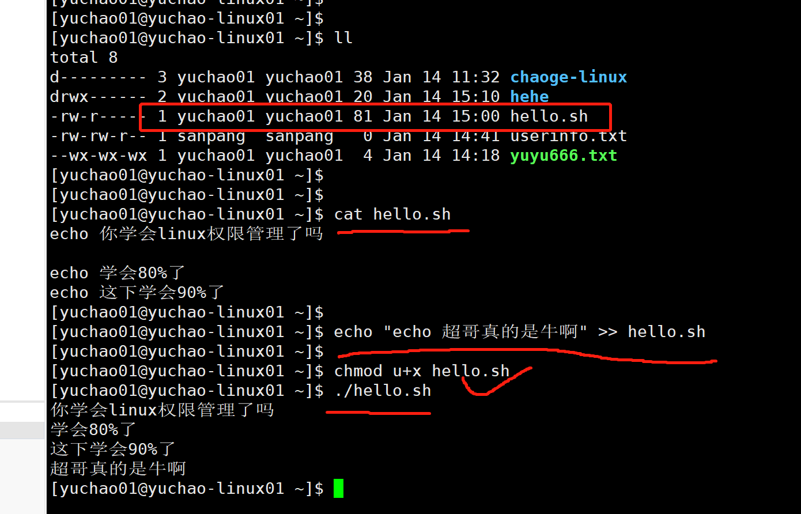
四、特殊权限
4.0 什么是特殊权限
上节课我们学习了Linux系统的9位基本权限rwx rwx rwx，但是有时候会发现系统一些关键的文件，存在一些没见过的权限字符。
比如/etc/passwd
[root@yuchao-tx-server ~]# ll /usr/bin/passwd
-rwsr-xr-x 1 root root 27856 4月 1 2020 /usr/bin/passwd
可见，出现了没见过的s字符权限，这是什么鬼？超哥告诉你，它是传说中的特殊权限suid。
除了超哥讲的9位基本权限之外，linux权限位，还有3个特殊权限，一共是12位权限。
suid(setuid)
sgid(setgid)
sbit(sticky)
特殊权限对照表
| 类别 | suid | sgid | sticky |
|---|---|---|---|
| 字符表示 | S | S | T |
| 出现位置 | 用户权限位x | 用户组权限位x | 其他用户权限位x |
| 基本权限位有x | s | s | t |
| 数字表示法 | 4 | 2 | 1 |
| 八进制表示法 | 4000 | 2000 | 1000 |
| 生效对象 | 用户位 | 用户组 | 其他用户 |
4.1 、SUID 特殊权限
4.1.1 suid基础原理
1. suid通过S字符标识，存在于用户权限位的x权限对应位置。
2. 如果某文件，用户权限位本身就有x权限，给该文件设置suid权限时，则以小写s标识，否则就是大写的S字符。
3. 给文件设置s权限对应的数字表示法是4，八进制数下可以用4000
4. suid同样也用chmod设置权限，可以以字符法，数字法两种标识。
4.1.2 自定义文件设置suid
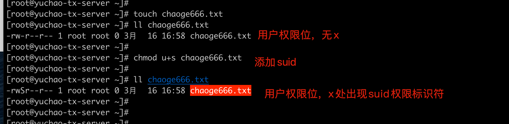
4.1.3 /usr/bin/passwd与suid
[yuchao01@yuchao-linux01 ~]$ ll /usr/bin/passwd
-rwsr-xr-x. 1 root root 27832 Jun 10 2014 /usr/bin/passwd
我们会发现这个passwd命令，有一个奇怪的s权限，这干啥的？
可以看到，原本表示文件所有者权限中的 x 权限位，却出现了 s 权限，此种权限通常称为 SetUID，简称 SUID 特殊权限。
- SUID 特殊权限仅适用于可执行文件
- 所具有的功能是，只要用户对设有 SUID 的文件有执行权限，那么当用户执行此文件时，会以文件属主的身份去执行此文件
- 一旦文件执行结束，身份的切换也随之消失。
以这个/usr/bin/passwd可执行命令举例
就是让普通用户，执行该命令时，临时获得root的权限。
解释关于linux的用户创建。
- 用户创建完用户后，需要修改密码，执行passwd命令
- 但是passwd命令需要读取，修改/etc/passwd、/etc/shadow文件，这些文件都是属于root，那不就没权限操作了吗，但是普通用户，如何执行passwd命令，修改自己的密码呢？
- 可以让普通用户临时获得root的身份，不就有属主的权限了吗。
- 这就是设置SUID的一个根本原因。
- 且SUID特殊权限，只能用在二进制可执行文件上。
图解suid应用
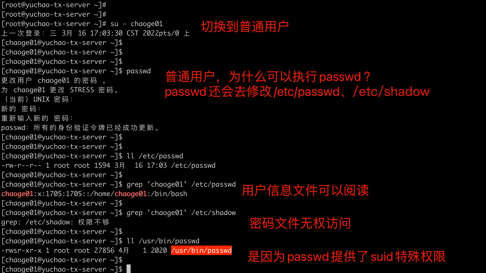
4.2、实践SUID
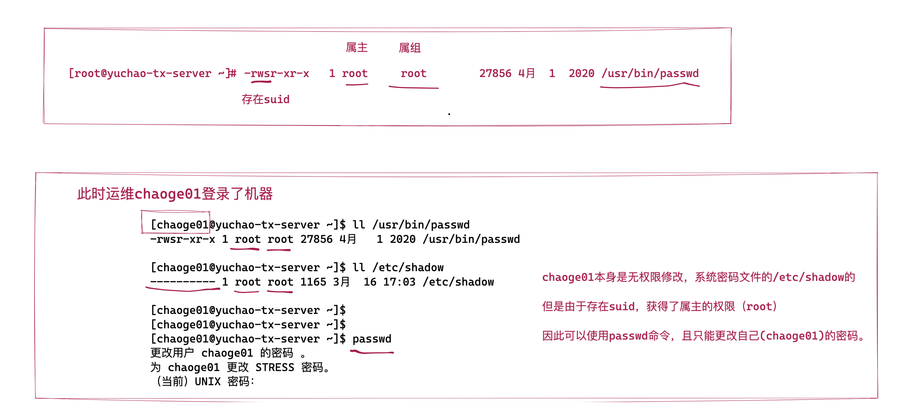
既然passwd有s权限，可以让用户修改自己的密码
问题，如何进制用户自己修改密码？
# 去除passwd的s权限
[root@yuchao-linux01 yuchao01]# chmod u-s /usr/bin/passwd
[root@yuchao-linux01 yuchao01]#
[root@yuchao-linux01 yuchao01]#
[root@yuchao-linux01 yuchao01]# ll /usr/bin/passwd
-rwxr-xr-x. 1 root root 27832 Jun 10 2014 /usr/bin/passwd
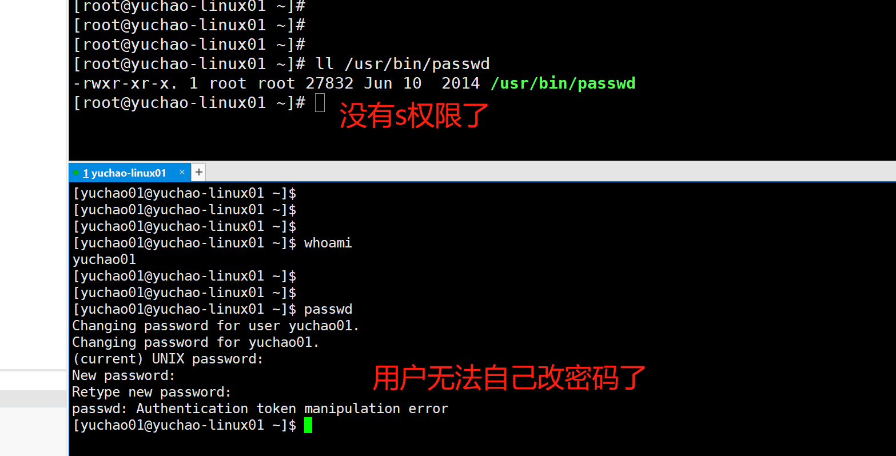
如何再给SUID特殊权限加上去。
[root@yuchao-linux01 ~]# ll /usr/bin/passwd
-rwxr-xr-x. 1 root root 27832 Jun 10 2014 /usr/bin/passwd
# 添加方式一
[root@yuchao-linux01 ~]# chmod u+s /usr/bin/passwd
[root@yuchao-linux01 ~]#
# 添加方式二，数字权限
[root@yuchao-linux01 ~]# chmod 4755 /usr/bin/passwd
[root@yuchao-linux01 ~]# ll /usr/bin/passwd
-rwsr-xr-x. 1 root root 27832 Jun 10 2014 /usr/bin/passwd
此时用户可以正确自己修改密码。
4.2.1 总结suid
请注意：学习SUID是为了知道有它的存在，但不要随便用。
SUID位的文件被执行时，该文件将以所有者的身份运行，也就是说无论谁来执行这个文件，他都有文件所有者的特权。
如果属主是root的话，那么执行人就有超级用户的特权了。这时该位将变成一个安全漏洞，因此不要轻易设置该位。
1. suid功能是针对二进制可执行命令设置的，不能用在shell脚本上。
2. 用户权限位的x权限位置处，如果有s或S，表示该命令存在suid权限。
3. suid的作用就是，让普通用户在执行设置了suid权限的命令时，可以拥有其(属主)的权限（一般默认是root）。
4. 二进制命令，如系统提供的ls，mkdir等命令，都需要有x权限才可以操作。
5. suid是一个危险的命令，对系统有一定威胁，一般依然是用sudo命令代替suid等特殊权限操作。
6. 系统安全优化时，会尽量去除所有设置suid的命令。
4.2.2 suid危险实践
在没有配置sudo的情况下，普通用户肯定是不能删除别人的数据的，比如。
# 默认用户是无法删除别人的资料的
[root@yuchao-tx-server ~]# touch /opt/我是root的文件
[root@yuchao-tx-server ~]#
[root@yuchao-tx-server ~]#
[root@yuchao-tx-server ~]# su - chaoge01
上一次登录：三 3月 16 17:03:41 CST 2022pts/0 上
[chaoge01@yuchao-tx-server ~]$
[chaoge01@yuchao-tx-server ~]$
[chaoge01@yuchao-tx-server ~]$ ls /opt/
containerd rh 我是root的文件
[chaoge01@yuchao-tx-server ~]$
[chaoge01@yuchao-tx-server ~]$ rm /opt/我是root的文件
rm：是否删除有写保护的普通空文件 "/opt/我是root的文件"？y
rm: 无法删除"/opt/我是root的文件": 权限不够
# 当rm命令添加了suid权限。
[root@yuchao-tx-server ~]# chmod u+s /bin/rm
[root@yuchao-tx-server ~]#
[root@yuchao-tx-server ~]# ll /bin/rm
-rwsr-xr-x 1 root root 62872 11月 17 2020 /bin/rm
# 再用普通用户，试试rm命令，危险警告！！
[chaoge01@yuchao-tx-server ~]$ ll /opt/我是root的文件
-rw-r--r-- 1 root root 0 3月 16 17:46 /opt/我是root的文件
[chaoge01@yuchao-tx-server ~]$
[chaoge01@yuchao-tx-server ~]$
[chaoge01@yuchao-tx-server ~]$
[chaoge01@yuchao-tx-server ~]$ rm /opt/我是root的文件
[chaoge01@yuchao-tx-server ~]$
[chaoge01@yuchao-tx-server ~]$ ll /opt/我是root的文件
ls: 无法访问/opt/我是root的文件: 没有那个文件或目录
[chaoge01@yuchao-tx-server ~]$
# 太可怕了!!!!!!!!!!!赶紧去掉suid。
[root@yuchao-tx-server ~]# ll /bin/rm
-rwsr-xr-x 1 root root 62872 11月 17 2020 /bin/rm
[root@yuchao-tx-server ~]#
[root@yuchao-tx-server ~]# chmod u-s /bin/rm
[root@yuchao-tx-server ~]#
[root@yuchao-tx-server ~]# ll /bin/rm
-rwxr-xr-x 1 root root 62872 11月 17 2020 /bin/rm
给rm命令设置suid之后，任何普通用户去执行这个命令，都会以root身份去运行，因此及其危险。
你学废了吗？兄弟。
4.2.3 查找系统中所有的suid权限文件
# find搜索，根据权限搜索
[root@yuchao-tx-server ~]# find / -type f -perm -4000 -ls
4.2.4 补充sgid（了解即可）
sgid原理篇
1.对于二进制命令来说，sgid的功能和suid基本一样，只不过一个是设置文件属主的权限，一个是设置属组的权限，和9位基本rwx那个理解概念一样。
2. suid是获得文件属主的权限，sgid是获得文件属组的权限
3. sgid主要用于文件夹，为某个目录设置sgid之后，在该目录中的创建的文件，都以（目录的属组）权限为准，而不属于创建该文件的用户权限，这就实现了多个用户，可以共享一个目录的作用。
sgid针对文件、文件夹的作用
对文件来说
1. sgid只对二进制命令生效，且需要二进制命令本身有x权限。
2. 执行包含sgid权限的二进制命令时，会获得该命令在执行期间所属的组的身份与权限。
对文件夹来说
1. linux中所有的用户，默认创建的文件，文件夹，属主和属组都是用户自身。
2. 设置了sgid的目录，会保证在这个目录下创建的文件、文件夹都保持同样的权限属性，都属于该目录的属组权限。
实践操作（红帽认证考题）
1.创建一个共享目录/home/admins
2.要求该目录属组是adminuser,adminuser组内成员对该目录的权限是，可读，可写，可执行。
3.其他用户均无任何权限（root特例）
4.进入/home/admins创建的文件，自动继承adminuser组的权限。
实践过程
[root@yuchao-tx-server ~]# mkdir /home/admins
[root@yuchao-tx-server ~]# groupadd adminuser
[root@yuchao-tx-server ~]# ll -d /home/admins
drwxr-xr-x 2 root root 4096 3月 16 18:18 /home/admins
# 修改属组
[root@yuchao-tx-server ~]# chown :adminuser /home/admins
[root@yuchao-tx-server ~]#
[root@yuchao-tx-server ~]#
[root@yuchao-tx-server ~]# ls -ld /home/admins/
drwxr-xr-x 2 root adminuser 4096 3月 16 18:18 /home/admins/
[root@yuchao-tx-server ~]#
还未设置sgid时，权限依然遵循linux默认的规则
[root@yuchao-tx-server ~]# touch /home/admins/我是超哥.log
[root@yuchao-tx-server ~]#
[root@yuchao-tx-server ~]# ll /home/admins/
总用量 0
-rw-r--r-- 1 root root 0 3月 16 18:44 我是超哥.log
加上sgid特殊权限
[root@yuchao-tx-server ~]# chmod 2770 /home/admins/
[root@yuchao-tx-server ~]#
[root@yuchao-tx-server ~]# ll -ld /home/admins/
drwxrws--- 2 root adminuser 4096 3月 16 18:44 /home/admins/
在该目录下创建的文件夹，自动属于adminuser组了
[root@yuchao-tx-server ~]# touch /home/admins/我是于超老师.log
[root@yuchao-tx-server ~]#
[root@yuchao-tx-server ~]# ll /home/admins/
总用量 0
-rw-r--r-- 1 root root 0 3月 16 18:44 我是超哥.log
-rw-r--r-- 1 root adminuser 0 3月 16 18:48 我是于超老师.log
换一个普通用户试试
[root@yuchao-tx-server ~]# su - chaoge01
上一次登录：三 3月 16 18:04:22 CST 2022pts/0 上
[chaoge01@yuchao-tx-server ~]$
[chaoge01@yuchao-tx-server ~]$ cd /home/admins/
-bash: cd: /home/admins/: 权限不够
[chaoge01@yuchao-tx-server ~]$
必须要求该用户是adminuser组里的成员，才有权限
[root@yuchao-tx-server ~]# usermod -G adminuser chaoge01
[root@yuchao-tx-server ~]#
[root@yuchao-tx-server ~]# su - chaoge01
上一次登录：三 3月 16 18:49:39 CST 2022pts/0 上
[chaoge01@yuchao-tx-server ~]$
[chaoge01@yuchao-tx-server ~]$ cd /home/admins/
[chaoge01@yuchao-tx-server admins]$ touch 我是chaoge01.log
[chaoge01@yuchao-tx-server admins]$
[chaoge01@yuchao-tx-server admins]$ ll
总用量 0
-rw-rw-r-- 1 chaoge01 adminuser 0 3月 16 18:50 我是chaoge01.log
-rw-r--r-- 1 root root 0 3月 16 18:44 我是超哥.log
-rw-r--r-- 1 root adminuser 0 3月 16 18:48 我是于超老师.log
4.3、SBIT特殊权限(sticky bit)
图解，为什么会用到sbit
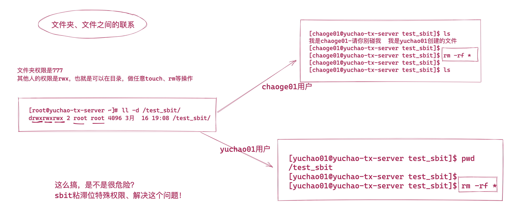
sbit原理
粘滞位（Sticky bit），又称作粘着位，linux下另一个特殊权限。
sbit粘滞位，用的已经很少了，但是对于系统特殊文件夹/tmp来说，是整个系统所有用户的临时文件存放地，谁都有任意的权限，你会发现该目录的权限巨大。
[root@yuchao-tx-server ~]# ll -d /tmp/
drwxrwxrwt. 8 root root 4096 3月 16 18:54 /tmp/
但是看到了一个特殊权限t
一句话总结。
当目录有了粘滞位特殊权限，这个目录除了root用户特殊以外，任何用户都只能删除、移动自己的创建的文件，而不能影响到其他人。
演示
没有设置粘滞位，且目录是777权限时，也就是任意的user、group、other角色在这个目录下，可以进行读、写、执行任意文件。
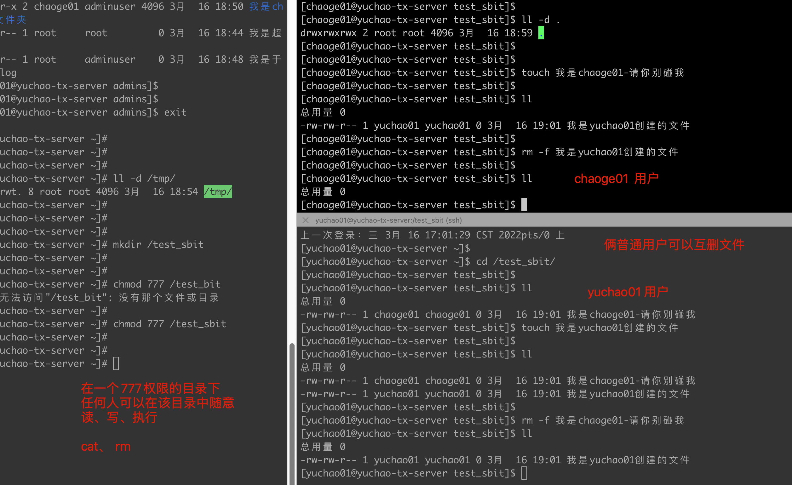
最常见的用法在目录上设置粘滞位，如此以来，只有目录内文件的所有者或者root才可以删除或移动该文件。
如果不为目录设置粘滞位，任何具有该目录写和执行权限的用户都可以删除和移动其中的文件。
实际应用中，粘滞位一般用于/tmp目录，以防止普通用户删除或移动其他用户的文件。
因此，t权限，是用于限制用户权限，禁止用户删除其他人资料的
[root@jumpserver ~]# ll /tmp/ -d
drwxrwxrwt. 14 root root 4096 Feb 10 18:49 /tmp/
命令：chmod
语法：# chmod [选项] 文件夹
作用：只允许文件的创建者和root用户删除文件
常用选项
o+t 添加粘滞位
o-t 去掉粘滞位
用法：chmod o+t 目录名
示例代码：
#chmod o+t
含义：给目录增加粘滞位权限。
4.3.0 实践
1.添加目录的sbit权限
[root@yuchao-tx-server ~]# chmod o+t /test_sbit/
[root@yuchao-tx-server ~]#
注意了，这个目录，是完全属于root用户的，但是other的权限也给到了最大。
[root@yuchao-tx-server ~]# ll -d /test_sbit/
drwxrwxrwt 2 root root 4096 3月 16 19:14 /test_sbit/
2.分别用两个普通用户测试，是否可以任意删除别人数据。
在这个拥有了sbit权限的目录下，你可以自由存放自己的资料，别人也可以
但是你只能操作你的文件，无法动别人的文件了。
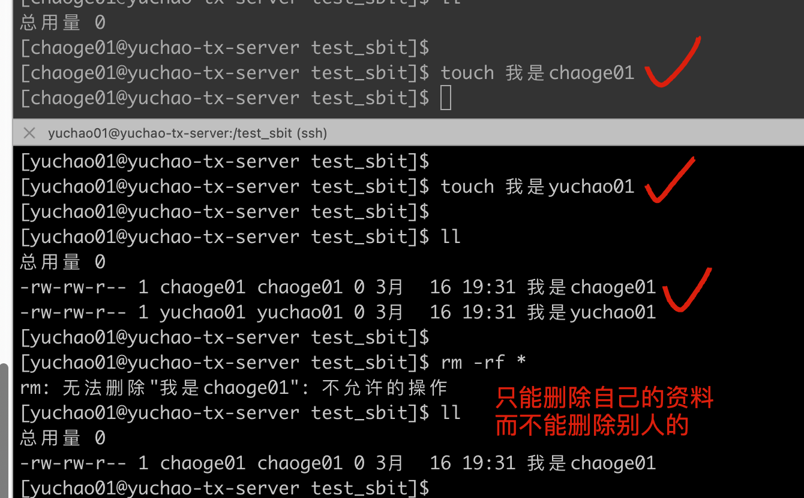
别人设置，看都不让你看。
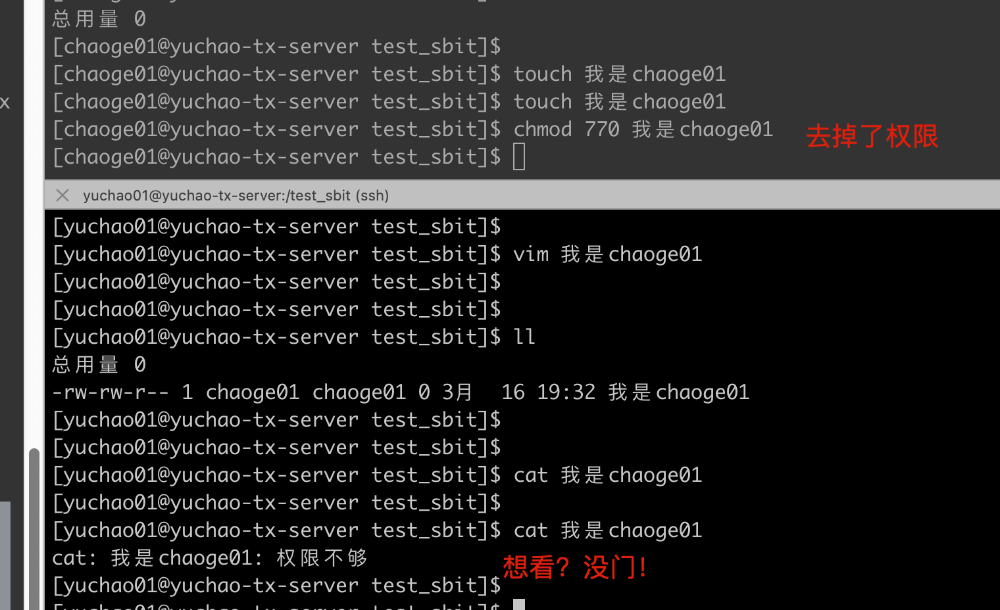
4.3.1 sbit应用
公司多个部门公用一个文件夹work,为了让所有人都能访问，work文件夹赋予了777权限，用户root新建了一个文件root.txt，发现被别人删除了。
我们希望root建立的文件，只有root自己可以删。
步骤1：root用户下操作
root用户新建文件夹/work，并且新建两个文件root.txt和root1.txt，赋予/work文件夹和下面的文件777权限.
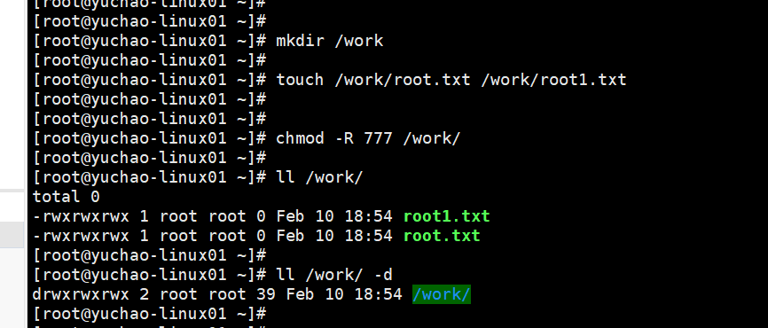
[root@yuchao-linux01 ~]# mkdir /work
[root@yuchao-linux01 ~]#
[root@yuchao-linux01 ~]# touch /work/root.txt /work/root1.txt
[root@yuchao-linux01 ~]#
[root@yuchao-linux01 ~]#
[root@yuchao-linux01 ~]# chmod -R 777 /work/
[root@yuchao-linux01 ~]#
[root@yuchao-linux01 ~]# ll /work/
total 0
-rwxrwxrwx 1 root root 0 Feb 10 18:54 root1.txt
-rwxrwxrwx 1 root root 0 Feb 10 18:54 root.txt
[root@yuchao-linux01 ~]#
[root@yuchao-linux01 ~]# ll /work/ -d
drwxrwxrwx 2 root root 39 Feb 10 18:54 /work/
[root@yuchao-linux01 ~]#
步骤2，使用普通用户登录，模拟恶意删除其他人文件。
[yuchao66@yuchao-linux01 ~]$ ls /work/
root1.txt root.txt
[yuchao66@yuchao-linux01 ~]$
[yuchao66@yuchao-linux01 ~]$
[yuchao66@yuchao-linux01 ~]$ ls /work/ -d
/work/
[yuchao66@yuchao-linux01 ~]$
[yuchao66@yuchao-linux01 ~]$
[yuchao66@yuchao-linux01 ~]$ ll /work/ -d
drwxrwxrwx 2 root root 39 Feb 10 18:54 /work/
[yuchao66@yuchao-linux01 ~]$
[yuchao66@yuchao-linux01 ~]$
[yuchao66@yuchao-linux01 ~]$ cd /work/
[yuchao66@yuchao-linux01 work]$ ll
total 0
-rwxrwxrwx 1 root root 0 Feb 10 18:54 root1.txt
-rwxrwxrwx 1 root root 0 Feb 10 18:54 root.txt
[yuchao66@yuchao-linux01 work]$
[yuchao66@yuchao-linux01 work]$ rm -f root.txt
[yuchao66@yuchao-linux01 work]$
[yuchao66@yuchao-linux01 work]$ ll
total 0
-rwxrwxrwx 1 root root 0 Feb 10 18:54 root1.txt
[yuchao66@yuchao-linux01 work]$
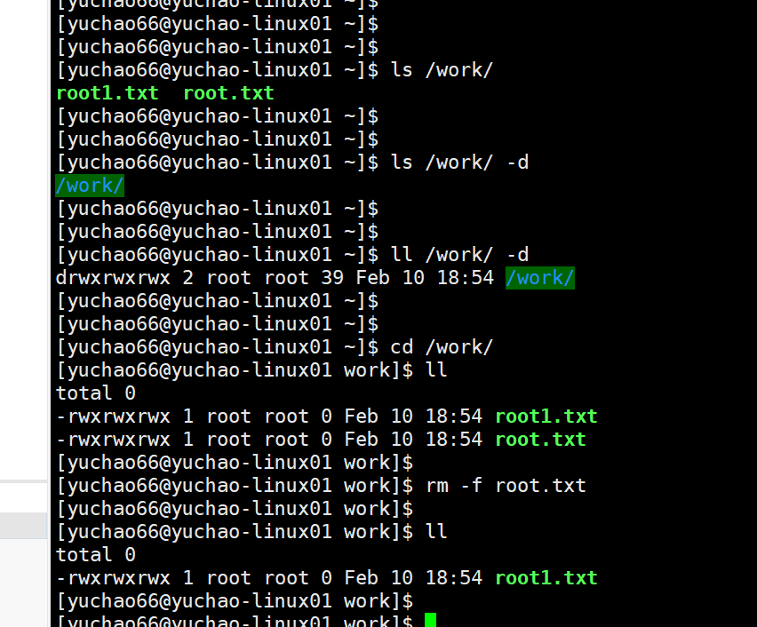
你看，这么一个公共目录，一个普通用户yuchao66就能随便删除人家的资料，这么是不对的。
步骤3：给该公共目录添加粘滞位，再看看效果。
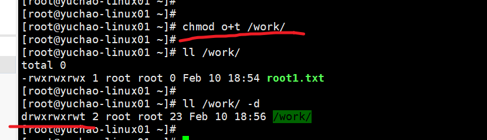
[root@yuchao-linux01 ~]# chmod o+t /work/
[root@yuchao-linux01 ~]#
[root@yuchao-linux01 ~]# ll /work/
total 0
-rwxrwxrwx 1 root root 0 Feb 10 18:54 root1.txt
[root@yuchao-linux01 ~]#
[root@yuchao-linux01 ~]# ll /work/ -d
drwxrwxrwt 2 root root 23 Feb 10 18:56 /work/
[root@yuchao-linux01 ~]#
步骤4，使用yuchao66用户，再看下有什么权限
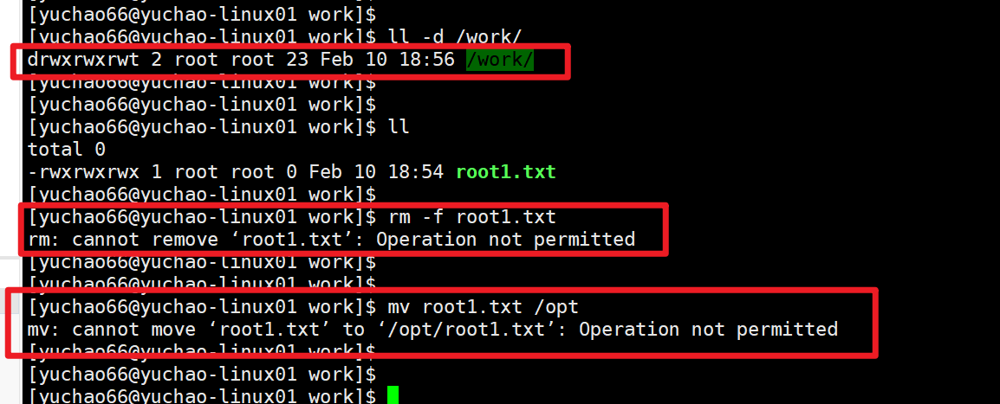
[yuchao66@yuchao-linux01 work]$
[yuchao66@yuchao-linux01 work]$ ll -d /work/
drwxrwxrwt 2 root root 23 Feb 10 18:56 /work/
[yuchao66@yuchao-linux01 work]$
[yuchao66@yuchao-linux01 work]$
[yuchao66@yuchao-linux01 work]$ ll
total 0
-rwxrwxrwx 1 root root 0 Feb 10 18:54 root1.txt
[yuchao66@yuchao-linux01 work]$
[yuchao66@yuchao-linux01 work]$ rm -f root1.txt
rm: cannot remove ‘root1.txt’: Operation not permitted
[yuchao66@yuchao-linux01 work]$
[yuchao66@yuchao-linux01 work]$
[yuchao66@yuchao-linux01 work]$ mv root1.txt /opt
mv: cannot move ‘root1.txt’ to ‘/opt/root1.txt’: Operation not permitted
[yuchao66@yuchao-linux01 work]$
步骤5，去掉粘滞位，再看看权限
只有root才给权限
[root@yuchao-linux01 ~]# chmod o-t /work/
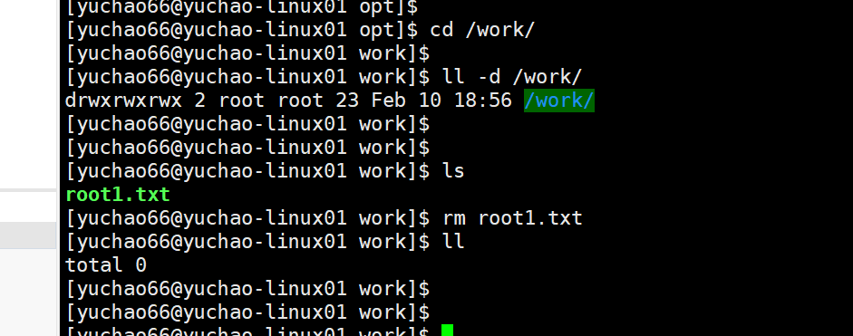
[yuchao66@yuchao-linux01 opt]$ cd /work/
[yuchao66@yuchao-linux01 work]$
[yuchao66@yuchao-linux01 work]$ ll -d /work/
drwxrwxrwx 2 root root 23 Feb 10 18:56 /work/
[yuchao66@yuchao-linux01 work]$
[yuchao66@yuchao-linux01 work]$
[yuchao66@yuchao-linux01 work]$ ls
root1.txt
[yuchao66@yuchao-linux01 work]$ rm root1.txt
[yuchao66@yuchao-linux01 work]$ ll
total 0
[yuchao66@yuchao-linux01 work]$
五、ACL访问控制
回忆之前讲了什么
关于文件拥有者的身份
- user
- group
- other
关于文件的权限
- read
- write
- execute
- SUID
但是在工作里的复杂环境下，这样的权限，已经不够用了。
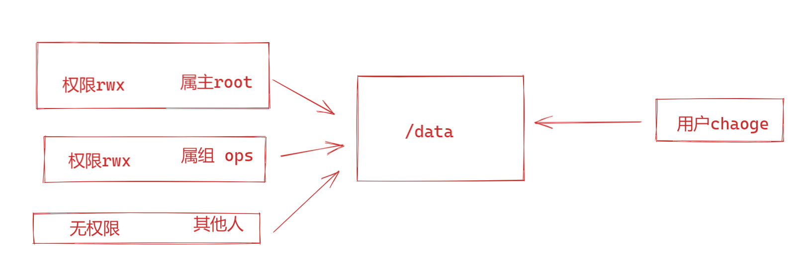
5.1、ACL使用场景
- /data是运维部门的资料，运维ops组里的员工可以rwx权限管理
- root作为该目录的属主，也拥有rwx权限
- 其他部门的员工，比如开发同学就无法访问这个目录数据
偶然的，现在有一个测试岗的同事chaoge，需要访问该/data数据，读取文件夹数据，就得有rx两个权限，并且只能是rx权限，只读文件夹，不得给w写入权限。
应该如何给与他使用权限？
- 修改属主？不可能
- 好比别人想看看你手机，难不成你就要送给他？
- 修改属组？有同学会尝试思考如下方案，你来看对不对
- 这个/data被整个ops部门组的用户在使用，肯定不可能改为chaoge组
- 并且即使给这个chaoge用户，加入ops组，也不对，ops组是rwx权限，我们要求只给chaoge用户rx权限。
- 还有就是修改other的权限为rx？因为chaoge属于是other角色，但是这样也不行，导致其他人都能访问了。
就是这个情况，我们能明显感到头大，自带的权限，没办法啊。
ACL是Access Control List（访问控制列表）的缩写，不过在Linux系统中，ACL用于设定用户针对文件的权限。
ACL这个功能就是用来解决上述权限不够的问题的，使用ACL给用户chaoge分配权限，chaoge既不是/data的属主，也不是属组，单独给chaoge用户分配关于/data文件夹的r-x权限。
5.2 检查ACL功能
ACL访问控制列表这个功能是和文件系统挂钩的，需要文件系统的支持，并且在centos7系统下，默认就支持ACL了。
可以通过dmesg命令，查看到ACL相关信息。
dmesg可以查看到系统的启动信息，包括硬件信息，操作系统信息。
[root@yuchao-linux01 ~]# dmesg |grep ACL
[ 16.890605] systemd[1]: systemd 219 running in system mode. (+PAM +AUDIT +SELINUX +IMA -APPARMOR +SMACK +SYSVINIT +UTMP +LIBCRYPTSETUP +GCRYPT +GNUTLS +ACL +XZ +LZ4 -SECCOMP +BLKID +ELFUTILS +KMOD +IDN)
[ 17.775177] SGI XFS with ACLs, security attributes, no debug enabled
如果未安装ACL，可以手动安装（需要配置好网络）
[root@yuchao-linux01 ~]# yum install acl -y
5.3 命令使用
getfacl命令：查看文件的ACL策略及权限
setfacl命令： 给文件针对某个用户或者某个组来增加（设置）ACL策略
Linux设置文件ACL权限是通过setfacl工具来设置的，通过getfacl工具来获取ACL访问控制列表
5.4 getfacl命令
如何判断linux的文件，是否额外设置了ACL权限。
ls -l工具可以查看到文件所属的九列权限，同时可以看到九列权限之后一位：如果是点（.）表示仅仅有九列权限，如果是+，表示除九列之外还有ACL权限，这时候就需要通过getfacl工具查看ACL权限
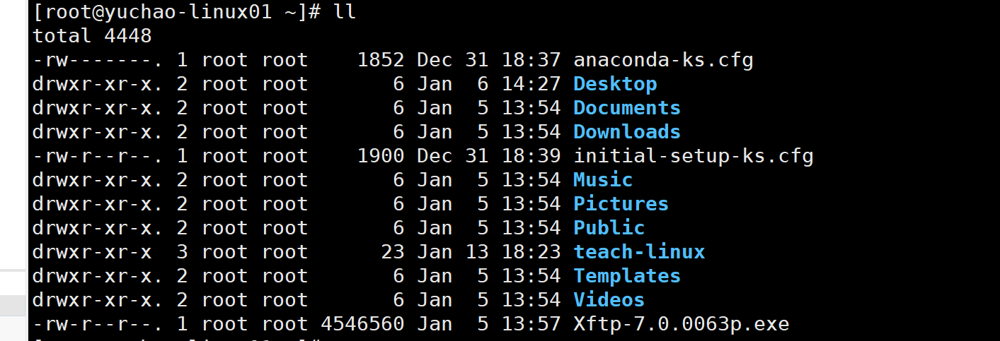
看看getfacl命令怎么用
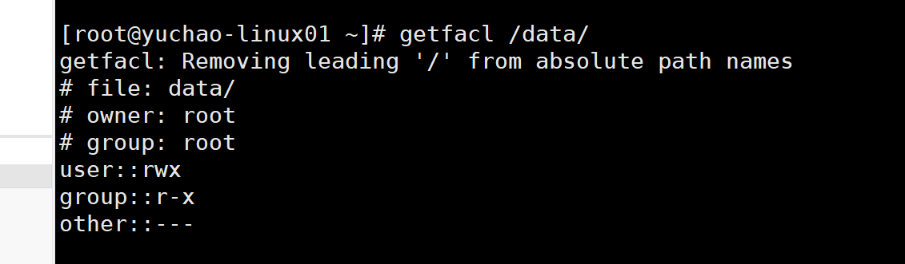
- 前三行，以井号开头的，表示注释信息，不起作用
- file，显示文件，目录名
- owner，紧跟着属主名
- group，紧跟着属组名
- 非井号开头的，就是ACL的权限控制规则了
[root@yuchao-linux01 ~]# getfacl /data/
getfacl: Removing leading '/' from absolute path names
# file: data/
# owner: root
# group: root
user::rwx
group::r-x
other::---
语法
user:用户名:权限，这一行完整的写法是 user:root:rwx
group:组名:权限，这一行也是省略了，其实是group:root:r-x
other::--- 表示其他人没有任何权限
先知道，getfcal命令是能够查看文件的acl配置的
5.5 setfacl命令
语法
setfacl 选项 文件
选项：
-m：设定 ACL 权限。
如果是给予用户 ACL 权限，则使用"u:用户名：权限"格式赋予；如果是给予组 ACL 权限，则使用"g:组名：权限" 格式赋予；
-x：删除指定的 ACL 权限；
-b：删除所有的 ACL 权限；
-d：设定默认 ACL 权限。
只对目录生效，指目录中新建立的文件拥有此默认权限；
-k：删除默认 ACL 权限；
-R：递归设定 ACL 权限。
不加-R的话，生成新子目录后，权限不继承。
指设定的 ACL 权限会对目录下的所有子文件生效；
实践setfacl
实践，给chaoge用户设置访问/data文件夹的r-x权限。
准备好测试数据
# 准备好测试数据
[root@yuchao-linux01 ~]# ll -d /data
drwxr-x--- 2 root ops 26 Jan 14 14:41 /data
[root@yuchao-linux01 ~]#
[root@yuchao-linux01 ~]# cd /data
[root@yuchao-linux01 data]#
[root@yuchao-linux01 data]# touch chaoge{1..10}.txt
[root@yuchao-linux01 data]#
[root@yuchao-linux01 data]# chown -R root.ops /data
[root@yuchao-linux01 data]#
[root@yuchao-linux01 data]#
[root@yuchao-linux01 data]#
[root@yuchao-linux01 data]# ll /data
total 0
-rw-r--r-- 1 root ops 0 Jan 14 17:59 chaoge10.txt
-rw-r--r-- 1 root ops 0 Jan 14 17:59 chaoge1.txt
-rw-r--r-- 1 root ops 0 Jan 14 17:59 chaoge2.txt
-rw-r--r-- 1 root ops 0 Jan 14 17:59 chaoge3.txt
-rw-r--r-- 1 root ops 0 Jan 14 17:59 chaoge4.txt
-rw-r--r-- 1 root ops 0 Jan 14 17:59 chaoge5.txt
-rw-r--r-- 1 root ops 0 Jan 14 17:59 chaoge6.txt
-rw-r--r-- 1 root ops 0 Jan 14 17:59 chaoge7.txt
-rw-r--r-- 1 root ops 0 Jan 14 17:59 chaoge8.txt
-rw-r--r-- 1 root ops 0 Jan 14 17:59 chaoge9.txt
给chaoge用户添加acl权限
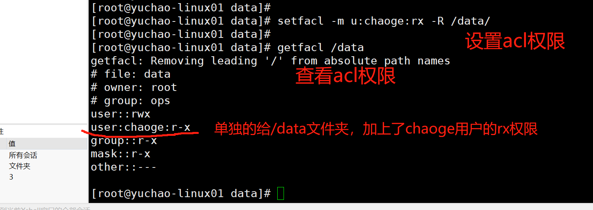
测试权限（图解）
先来看看，/data目录，会发现结尾多了一个+号，表示存在acl规则
[root@yuchao-linux01 data]# ll -d /data
drwxr-x---+ 2 root ops 197 Jan 14 17:59 /data
用yuchao01用户试试访问该目录，注意该目录，其他人是无权限的。
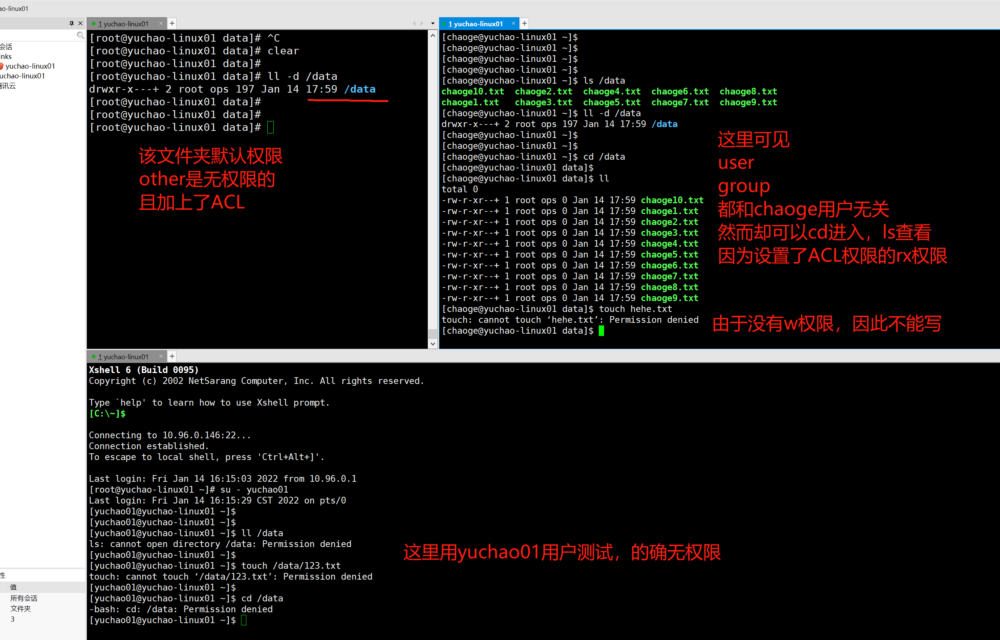
删除acl
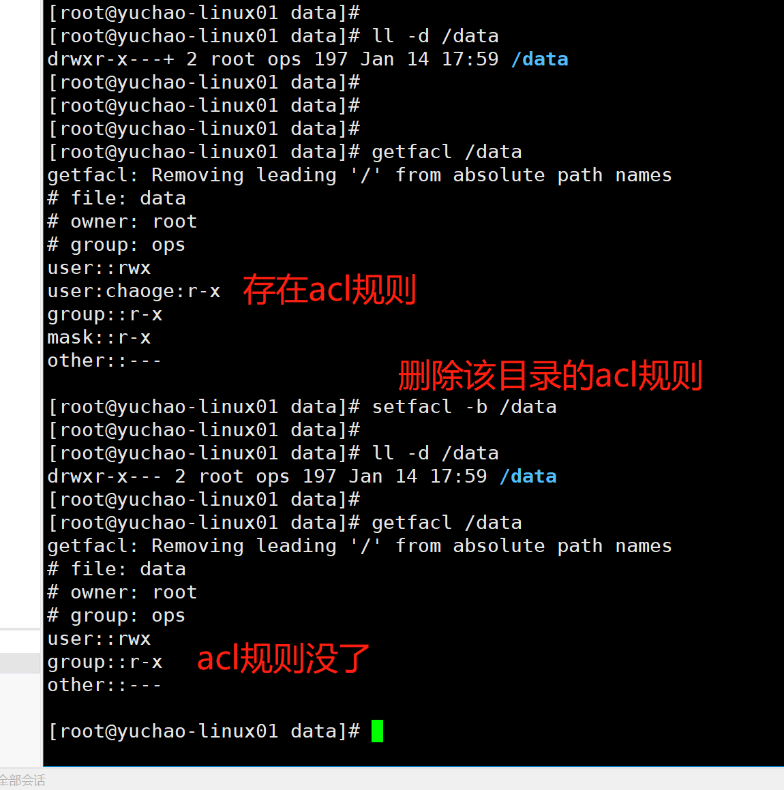
规则删除后，chaoge用户也会在第一时间，丢失权限。
六、umask
umask 命令用来限制新文件权限的掩码，也称之为遮罩码。
- 防止文件、文件夹创建的时候，权限过大
- 当新文件被创建时，其最初的权限由文件创建掩码决定。
用户每次注册进入系统时，umask命令都被执行，并自动设置掩码改变默认值，新的权限将会把旧的覆盖。
root用户和普通用户的，umask值不一样，创建文件的权限也不一样。
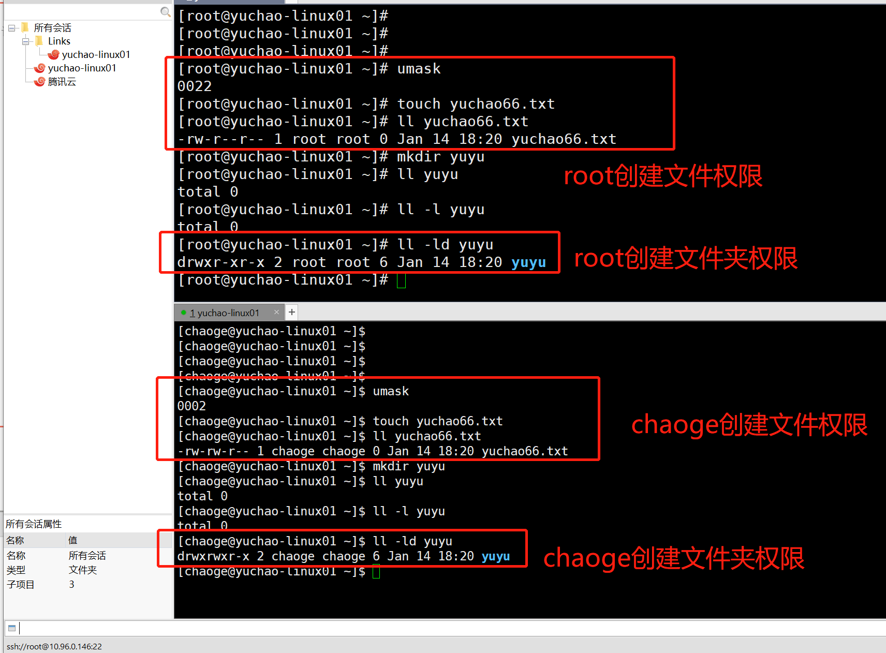
root用户创建的
# 文件夹权限默认是755
[root@yuchao-linux01 ~]# ll -ld yuyu
drwxr-xr-x 2 root root 6 Jan 14 18:20 yuyu
# 文件权限默认644
[root@yuchao-linux01 ~]# ll yuchao66.txt
-rw-r--r-- 1 root root 0 Jan 14 18:20 yuchao66.txt
chaoge普通用户创建的
#文件夹权限775
[chaoge@yuchao-linux01 ~]$ ll -ld yuyu
drwxrwxr-x 2 chaoge chaoge 6 Jan 14 18:20 yuyu
# 文件权限 664
[chaoge@yuchao-linux01 ~]$ ll yuchao66.txt
-rw-rw-r-- 1 chaoge chaoge 0 Jan 14 18:20 yuchao66.txt
并且直接输入umask可以看到默认的值。
[root@yuchao-linux01 ~]# umask
0022
[chaoge@yuchao-linux01 ~]$ umask
0002
umask默认配置在/etc/profile 61-64行
6.1 图解umask
- linux默认文件夹最大权限是777（文件夹必须、可读、可写、可执行）
- linux文件默认最大权限是666（缺少x，因为x专门给可执行命令用，而不是普通文件）
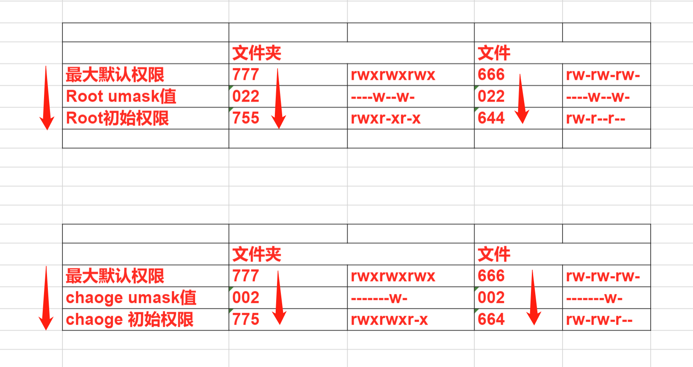
从这个表格来看
linux用户默认创建文件，文件夹的权限是怎么决定的
默认最高权限 - umask = 初始权限
比如文件的
root 666-022=644 rw-r--r--
chaoge 666-002=664 rw-rw-r--
6.2 注意umask别设置为基数
当umask设置为011时
比如root用户
默认文件最大权限 666
umask值 011
初始文件权限，理论是 655
但是结果是这样吗
[root@yuchao-linux01 ~]# umask 011
[root@yuchao-linux01 ~]# touch test-umask.txt
[root@yuchao-linux01 ~]# ll test-umask.txt
-rw-rw-rw- 1 root root 0 Jan 16 14:01 test-umask.txt
发现文件权限依然是666
- 这是因为文件默认是没有x权限的，x权限一般专门用于
二进制文件，比如一个可以执行的linux命令。 - 如果遮罩码设置为奇数，创建的文件权限会自动+1变成偶数权限。
6.3 修改mask值（了解即可，不要改）
临时修改umask值
[root@yuchao-linux01 ~]#
[root@yuchao-linux01 ~]# umask 011
[root@yuchao-linux01 ~]# touch test-umask.txt
[root@yuchao-linux01 ~]# ll test-umask.txt
-rw-rw-rw- 1 root root 0 Jan 16 14:01 test-umask.txt
以后你默认创建的文件，其他人角色，也都有了写入权限，这不太合适吧。
永久修改umask值（所谓永久修改，指的是数据写入文件，每次开机都会加载）
# 1.编辑用户环境变量文件，用于设置针对你个人用户，每次开机想得到一些专属于你自己的信息
vim ~/.bashrc
# 2.写入信息，保存
umask 044
# 3. 重启登录ssh会话
exit
# 4.检查umask值
[root@yuchao-linux01 ~]# umask
0044
# 5.查看默认权限
[root@yuchao-linux01 ~]# touch t2-umask.txt
[root@yuchao-linux01 ~]#
[root@yuchao-linux01 ~]# ll t2-umask.txt
-rw--w--w- 1 root root 0 Jan 16 14:20 t2-umask.txt
七、文件特殊属性
7.1 修改文件特殊属性chattr
命令说明
- chattr用于改变文件的扩展属性。
- chmod用于修改文件9位基础权限、r、w、x
- 更底层的权限由chattr改变。
语法、参数
参数
a：只能向文件中添加数据，不得删除
-R：递归更改目录属性
-V：显示命令执行过程
模式
+ 增加参数
- 移除参数
= 更新为指定参数
A 不让系统修改文件最后访问时间
a 只能追加文件数据，不得删除
i 文件不能被删除、改名、修改内容
7.1.1 +a参数
+a 限制文件只能继续追加数据，不得删除。
[root@yuanlai-0224 ~]# echo "于超老师带你学Linux" >> t1.log
[root@yuanlai-0224 ~]#
[root@yuanlai-0224 ~]# lsattr t1.log
---------------- t1.log
添加一个a特殊属性，限制只能追加，且不得删除
发现除了追加写入，不得对文件做任何更改，连vim都不能
[root@yuanlai-0224 ~]# chattr +a t1.log
[root@yuanlai-0224 ~]#
[root@yuanlai-0224 ~]# lsattr t1.log
-----a---------- t1.log
[root@yuanlai-0224 ~]#
[root@yuanlai-0224 ~]# echo '666' >> t1.log
[root@yuanlai-0224 ~]# echo '666' >> t1.log
[root@yuanlai-0224 ~]# echo '666' > t1.log
-bash: t1.log: Operation not permitted
[root@yuanlai-0224 ~]#
[root@yuanlai-0224 ~]# mv t1.log t2.log
mv: cannot move ‘t1.log’ to ‘t2.log’: Operation not permitted
7.1.2 +i参数
+i 文件不能被删除、改名、修改内容，文件锁定。
[root@yuchao-tx-server ~]# touch t1.log
[root@yuchao-tx-server ~]# lsattr t1.log
---------------- t1.log
[root@yuchao-tx-server ~]#
[root@yuchao-tx-server ~]#
[root@yuchao-tx-server ~]# chattr +i t1.log
[root@yuchao-tx-server ~]# lsattr t1.log
----i----------- t1.log
无法操作
[root@yuchao-tx-server ~]# echo '123' > t1.log
-bash: t1.log: 权限不够
[root@yuchao-tx-server ~]#
[root@yuchao-tx-server ~]# mv t1.log t1.log.bak
mv: 无法将"t1.log" 移动至"t1.log.bak": 不允许的操作
[root@yuchao-tx-server ~]#
[root@yuchao-tx-server ~]# rm -rf t1.log
rm: 无法删除"t1.log": 不允许的操作
[root@yuchao-tx-server ~]#
[root@yuchao-tx-server ~]# cat t1.log
当你需要保护某个文件，不被删除，不得清空，保证只能写入新数据，比如一些系统日志，你要保留其所有的内容，可以设置。
chattr +a /var/log/messages
7.2 lsattr查看文件特殊属性
lsattr用于查看文件扩展的属性。
-R
递归地列出目录以及其下内容的属性.
-a
列出目录中的所有文件,包括以`.'开头的文件的属性.
-d
列出目录本身的属性
实践
[root@yuchao-tx-server ~]# lsattr t1.log
----i----------- t1.log
八、文件属性inode和block
linux为什么要设计inode
理解inode，要从文件储存说起。
文件储存在硬盘上，硬盘的最小存储单位叫做"扇区"（Sector）。每个扇区储存512字节（相当于0.5KB）。
操作系统读取硬盘的时候，不会一个个扇区地读取，这样效率太低，而是一次性连续读取多个扇区，即一次性读取一个"块"（block）。这种由多个扇区组成的"块"，是文件存取的最小单位。"块"的大小，最常见的是4KB，即连续八个 sector组成一个 block。
文件数据都储存在"块"中，那么很显然，我们还必须找到一个地方储存文件的元信息，比如文件的创建者、文件的创建日期、文件的大小等等。这种储存文件元信息的区域就叫做inode，中文译名为"索引节点"。
每一个文件都有对应的inode，里面包含了与该文件有关的一些信息。
查看inode存储的内容
* 文件的字节数
* 文件拥有者的User ID
* 文件的Group ID
* 文件的读、写、执行权限
* 文件的时间戳，共有三个：ctime指inode上一次变动的时间，mtime指文件内容上一次变动的时间，atime指文件上一次打开的时间。
* 链接数，即有多少文件名指向这个inode
* 文件数据block的位置
1.文件属性与inode查看
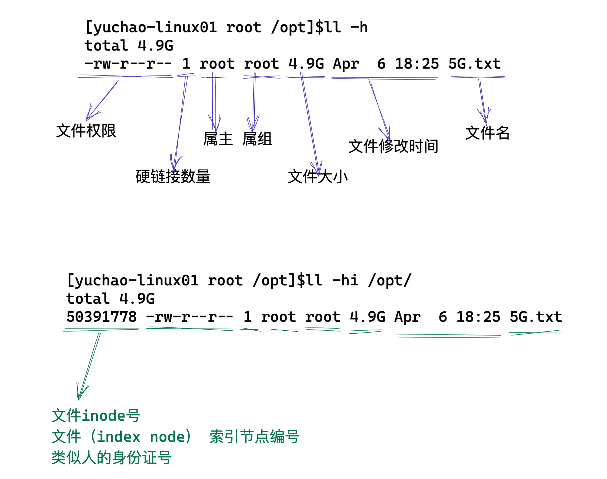
2.什么是inode
linux的文件，其实是分为了元数据+文件内容，两部分。
元数据，也就是文件的属性信息，可以通过stat命令查看到
存储元数据信息的空间，被称之为Inode
存储文件数据的空间，被称之为block
linux读取文件内容，其实是 以 文件名 > inode编号 > block 的顺序来读取
在你创建文件前必须先要分区、格式化（创建文件系统），创建文件系统后inode和block的数量就会固定下来。
每个inode都有一个号码，操作系统用inode号码来识别不同的文件。
这里值得重复一遍，Unix/Linux系统内部不使用文件名，而使用inode号码来识别文件。对于系统来说，文件名只是inode号码便于识别的别称或者绰号。
表面上，用户通过文件名，打开文件。实际上，系统内部这个过程分成三步：首先，系统找到这个文件名对应的inode号码；其次，通过inode号码，获取inode信息；最后，根据inode信息，找到文件数据所在的block，读出数据。
使用如下命令，可以查看文件的inode号
[yuchao-linux01 root /opt]$ls -i 5G.txt
50391778 5G.txt
3.图解，文件访问原理
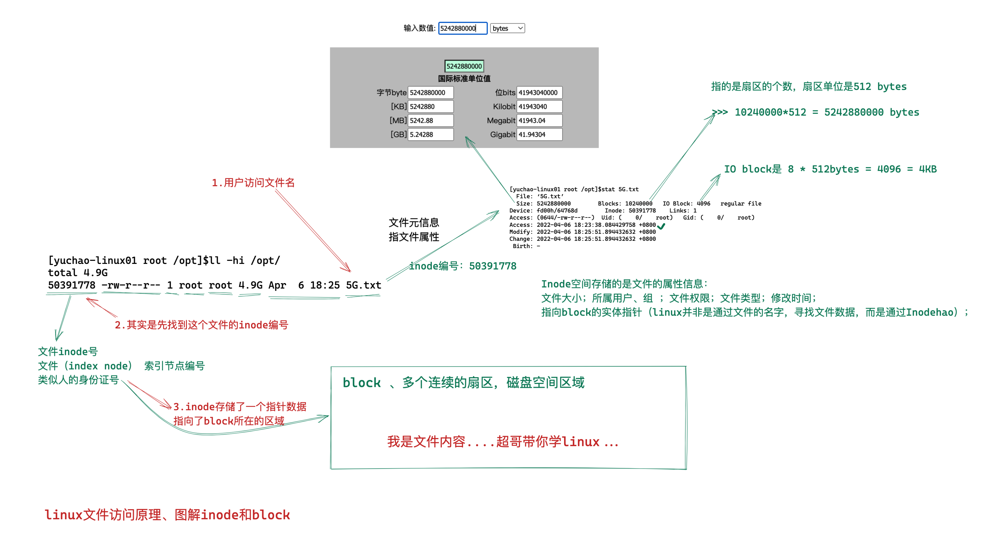
4.文件、文件夹的关系
目录是一个特殊的文件，目录保存的是当前目录下的文件名字
简单说，文件夹就是方便人类记忆文件存在哪、然后通过这个文件名吗，找到对应的文件inode号
inode号里记录了文件数据所处的block位置，最终访问到数据
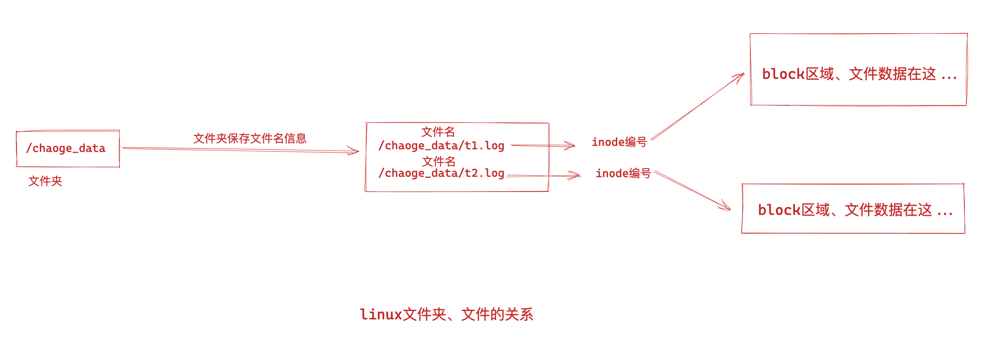
5.关于删除文件原理
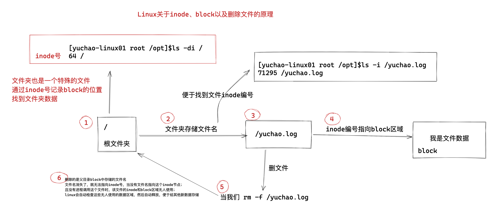
九、软连接、硬链接
1.软连接就是windows下的快捷方式
软连接文件存储的是源文件的路径。
访问软连接 ln -s
↓
访问到源文件的路径，源文件的文件名
↓
访问源文件的inode编号 ls -i filename
↓
inode找到block，访问到数据
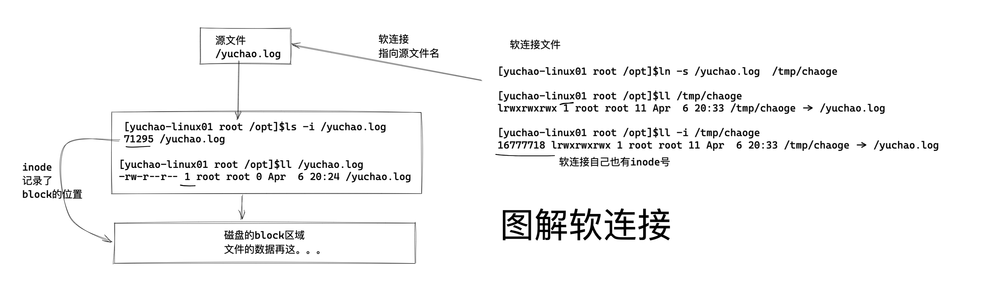
软连接特点
1.软连接文件的inode号和源文件不同，作用是存储源文件的路径
2.命令ln -s创建
3.删除普通软连接，不影响源文件
4.删除源文件，软连接找不到目标，报错提示。
2.硬链接
硬链接，就是一个数据（block）被多个相同inode号的文件指向。
就好比超市有好多个大门，但是都能进入到这个超市。。。
创建语法
ln 源文件 目标文件
创建硬链接
[yuchao-linux01 root /opt]$ls -l /yuchao.log
-rw-r--r-- 1 root root 0 Apr 6 20:24 /yuchao.log
[yuchao-linux01 root /opt]$
[yuchao-linux01 root /opt]$ln /yuchao.log /tmp/c1
[yuchao-linux01 root /opt]$ln /yuchao.log /tmp/c2
[yuchao-linux01 root /opt]$
[yuchao-linux01 root /opt]$ls -l /yuchao.log
-rw-r--r-- 3 root root 0 Apr 6 20:24 /yuchao.log
检查多个硬链接的inode号，都是同一个，表示是指向同一个区域的数据
[yuchao-linux01 root /opt]$ls -i /yuchao.log
71295 /yuchao.log
[yuchao-linux01 root /opt]$ls -i /tmp/c1
71295 /tmp/c1
[yuchao-linux01 root /opt]$ls -i /tmp/c2
71295 /tmp/c2
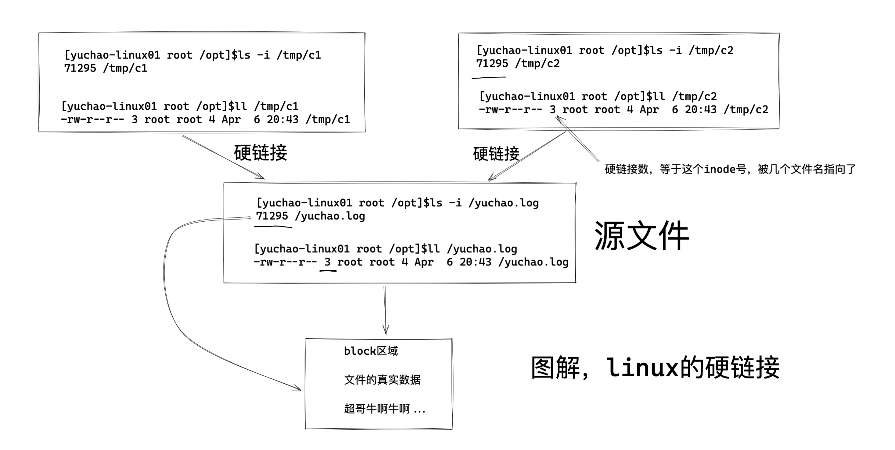
硬链接特点
1.可以对已存在的文件做硬链接
2.硬链接的文件，inode相同，属性一致
3.只能在同一个磁盘分区下，同一个文件系统下创建硬链接
4.不能对文件夹创建硬链接，只有文件可以
5.删除一个硬链接，不影响其他相同inode号的文件
6.文件夹的硬链接，默认是2个，以及是2+（第一层子目录总数）=文件夹的硬链接数量
7.可以用任意一个硬链接作为入口，操作文件
8.当文件的硬链接数为0时，文件真的被删除
6.工作里咋用
1.一般会给文件夹添加软连接，便于管理
2.通过软连接来区分软件的多种版本
3.通过inode号彻底删除文件
7.练习题
1.创建文件夹的软连接
2.创建文件的软连接
3.删除文件、目录的软连接，查看效果
4.删除文件、目录的源文件，查看效果
5.往源文件写入数据，查看软连接文件的变化
6.往软连接里写数据，查看源文件的变化